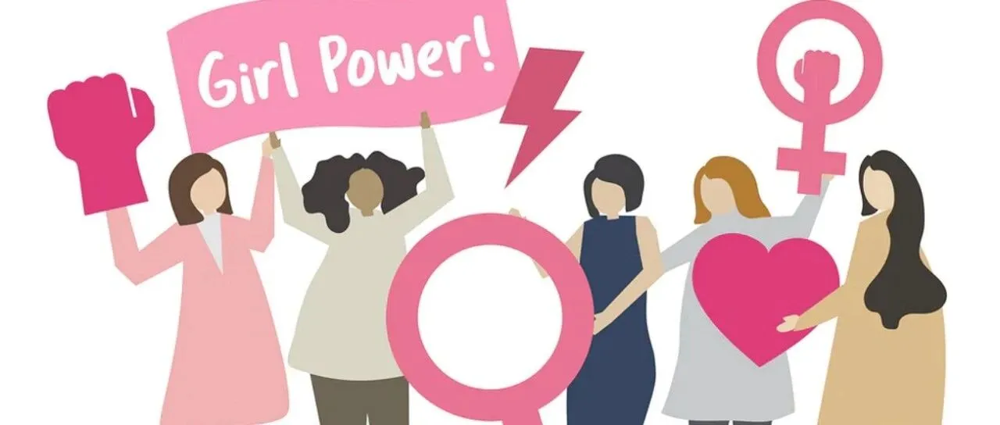
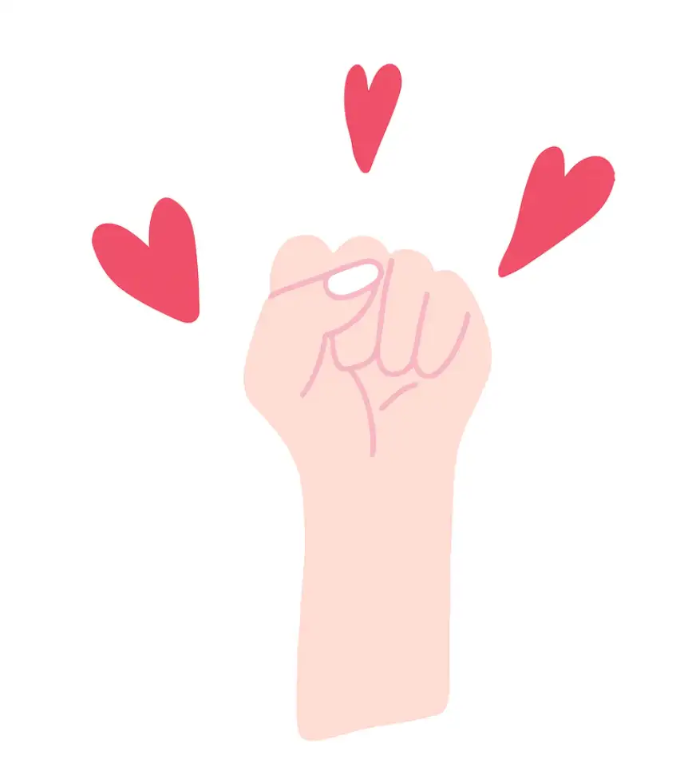
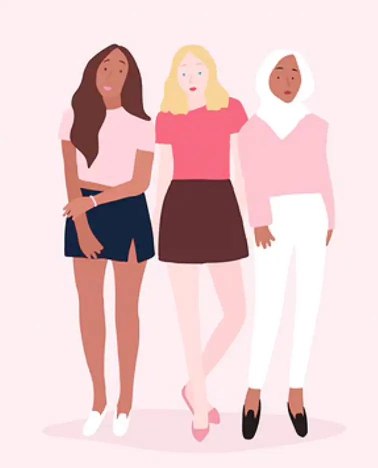
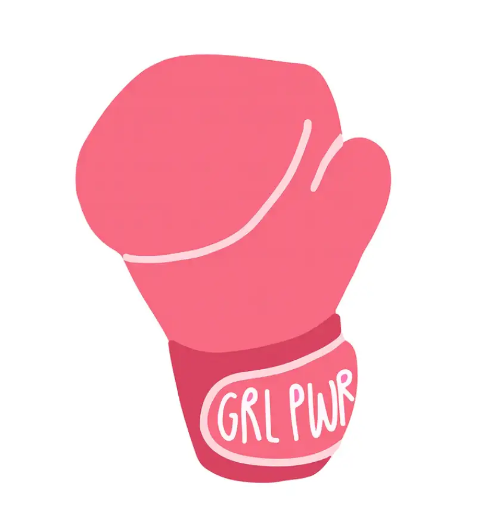
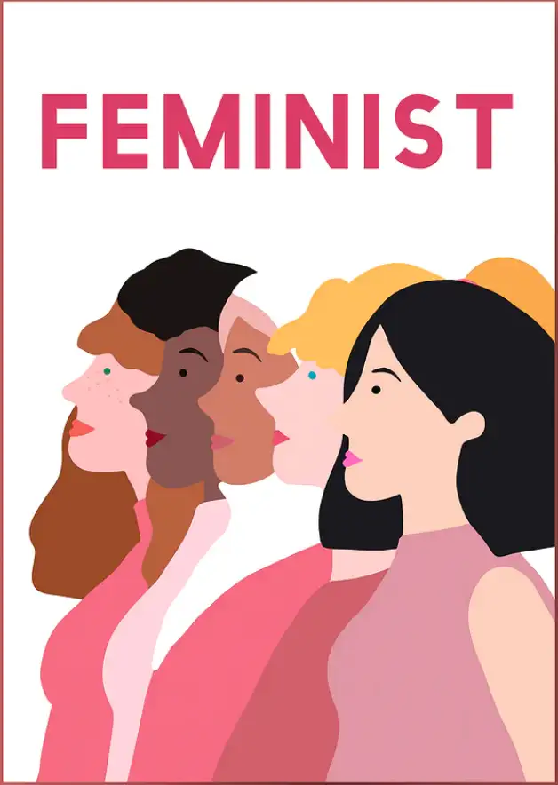
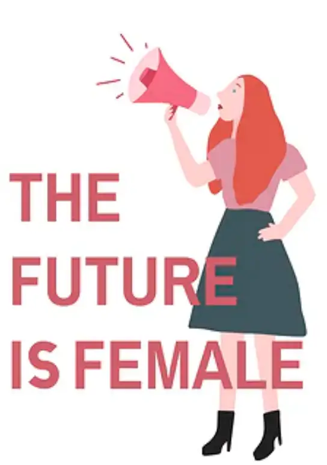
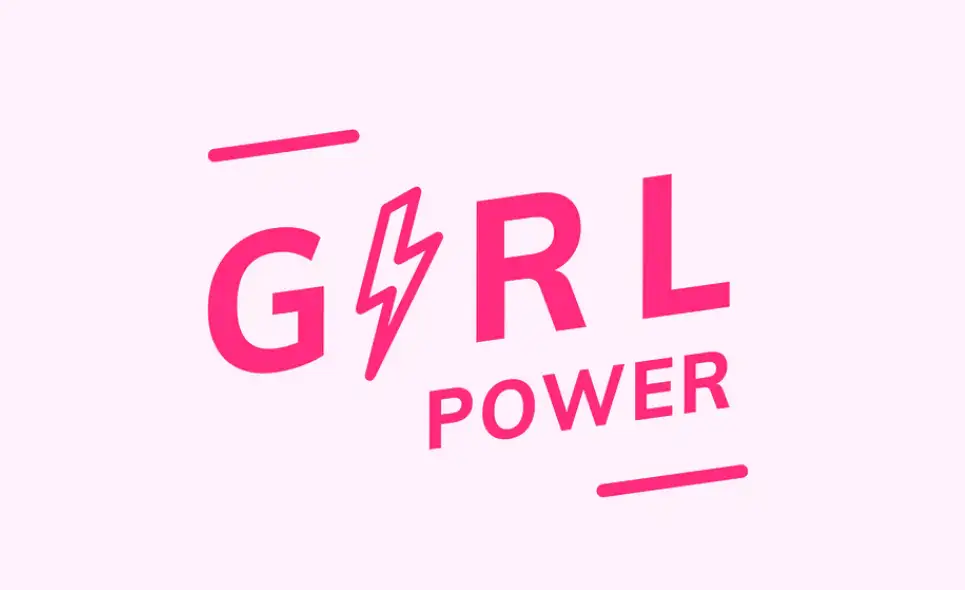
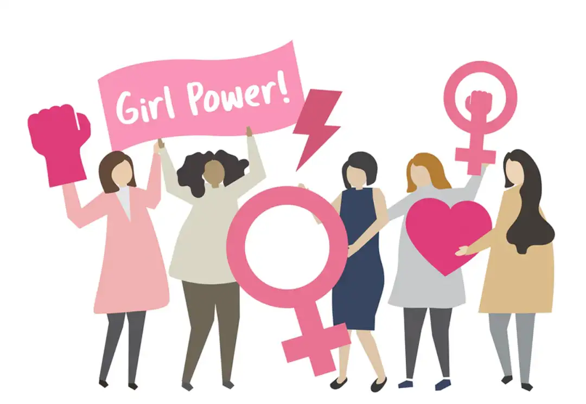
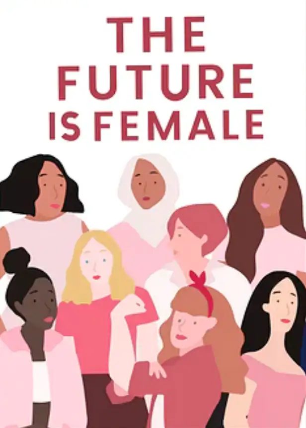

目录 ｜Contents
一、引言
二、正文
（一）煤气灯效应
（二） 为什么无法离开？
（三）如何自救
三、结语
四、参考文献
Part 01. 引言

“为什么在遭受那些过分而残忍的暴力行为后，仍然选择沉默甚至是怪罪自己？”
2019年11月25日，以逼真的仿妆收获大量关注的网红美妆博主宇芽，在遭受长达一年的家暴后，选择了于“国际消除对妇女暴力日”在微博上发声。
从宇芽的描述与曝光的视频中我们可以得知，日常以拍摄温馨、可爱的小动物为主要内容的博主却化身了暴戾、危险的人渣，对她实施了惨绝人寰的殴打。
而最令人细思极恐的是，作为施暴地点的电梯属于半公共场所，施暴者是以温柔、文艺的好男人形象著称的摄影博主，受害者亦在饱受家暴折磨的一年内，仍然在拥有百万粉丝的微博上，仅向公众展现着令人惊叹的仿妆、恬静美好的日常，同是施暴者一同“粉饰太平”。
如果宇芽不发声，这场已经发生五次的“灯下黑”般的残忍闹剧，很有可能在无人知晓的角落继续重复上演。

然而，根据全国妇联的统计，截至2019年底，全国2.7亿个家庭中就有30%的已婚妇女曾遭受家暴；而面对暴行，每10名家暴受害者中，有9名依旧在保持沉默，女性平均被虐待35次才会选择报警。
如果说，在家暴发生5次后就选择发声的宇芽，在不计其数的受害者中，已经属于较为勇敢的一位了，那么在无人知晓之处，还有多少遭受了一样残忍、甚至更为残忍的家庭暴力的女性，面对擢发难数的恶性仍然选择隐忍、保持沉默？
我们无法打破所有私密空间的围栏，家暴的揭发、披露多数情况下只能靠受害者自己。家暴的持续、恶行的隐蔽，常常不是因为世界黑暗，无人在意，是因为受害者心底的光亮，被施暴者熄灭了，而在外界的阳光主动照耀进灰暗的角落前，却又只能靠受害者点亮自己心底的光。
打破沉默，撕开黑暗，让恶行暴露于昭昭之宇，是应对、摆脱家暴的关键步骤。
在群众关注日益提高，法制建设逐渐完善的当下，家暴的阴霾仍然蛰伏在亲密关系中不为人知的角落里，发生于那些外人看似模范、美好的家庭中，由那些道貌岸然的衣冠禽兽实施，笼罩于无数遍体鳞伤却仍在拼凑坚强的受害者心上。无论是对于深陷泥潭无助挣扎的受害者，还是因缺乏理解而无从共情的群众，“为什么无法离开”，均是一个苦涩而复杂的问题，答案同暴行本身一起，隐蔽于晦暗不明的角落中。
Part 02. 正文
（一）
煤气灯效应
1、什么是“煤气灯效应”？——以爱之名行洗脑之实
上映于1944年的惊悚电影《煤气灯下》，描述了原本自信阳光、活泼开朗的少女宝拉，继承了巨额遗产后，被觊觎财富的渣男丈夫安东骗取好感、操纵精神，最终被逼疯、丧失人格的故事。
在该片的经典桥段中，男主安东刻意将家中的煤气灯调的忽明忽暗，并在女主对此表示疑惑之时，将其归咎于女主自身产生的幻觉，坚称灯光没有问题，进一步让女主丧失分辨现实与幻觉的能力，“煤气灯效应”因此得名。
“煤气灯效应”，又名“煤气灯操控”， 指施害者通过不断地扭曲事实或长期灌输虚假信息，让受害者产生自我怀疑，逐渐质疑自己的记忆力、判断力及精神状态，最终丧失自尊、自信及独立思考能力，完全被施害者所操控。
最容易直接左右我们情绪的人，常常也是亲密关系中的另一方，所以此种精神操控常常与家庭暴力常常相伴相随，以爱为名，摧毁着受害者的精神状态，让其不断自我厌弃、自我怀疑，甚至主动地为作为施害者的伴侣寻找借口。
2、三种常见施害者类型
（1）魅力型——忽冷忽热的浪漫，推拉反复的折磨
常见于外表浪漫、负有魅力的男性，先用长时间的冷暴力让你濒临崩溃，又用突如其来的精心营造的浪漫，让你妥协沦陷，并拒绝承认自己曾经的冷淡、拒绝解释自己毫无缘由的失踪，将你的痛苦不安归咎于你自身的敏感脆弱。
（2）好人型——打着为你好的名义，掌舵你的生活
执着于通过自认为对你好的方式，干涉、主导你的生活，表面上同意你的观点，实际上不屑一顾，让你在接连不断的妥协与让步中，莫名肩负起满足施害者期待的“责任”，甚至因不断反思自己而闷闷不乐。
（3）威胁型——盛气凌人的打压贬低
相比起前两种类型存在的迷惑性及隐蔽性，此类施害者的问题可谓昭然若揭——通过大呼小叫的贬低、连珠炮式的刁难发问、周期性的大发雷霆，又或是以“逗你玩”的名义进行反复嘲笑，将受害者折磨得筋疲力尽，让受害者觉得自己一无是处。
3、“煤气灯操纵”的三个阶段
煤气灯操纵常常都是“按部就班”地分阶段开展，由浅入深、循序渐进地蚕食受害者原本积极、健康的精神状态，甚至在初期难以被注意、发觉，直到完全占据你的思想、控制你的情绪。而在逐步迈入泥潭的过程中，受害者常常经历以下三个阶段：
（1）不相信
面对对方离谱、荒谬甚至诡异的无端质疑（如“那个问路的男人肯定对你意图不轨！”），会去尝试纠正对方的谬论或展开深入的争辩，受害者此时仍然相信自己的观点，即使本能地想得到对方的肯定，但并没有达到疯狂渴望的地步。但是，在该种情况持续一段时间后，倘若费尽心思的真诚解释始终无法说服对方，换来的却只是更多的指责与批评，受害者将会陷入持续的困惑、沮丧及焦虑，甚至逐渐开始自我怀疑——“这真的是他的问题吗？还是我的问题？”。
（2）辩解
该阶段的特征在于，受害者开始需要为自己的言行进行主动的辩解，努力寻找证据证明施害者才是错误的一方，并且极力与对方争论，拼命地争取对方的认可。此时，与施害者间的争吵与摩擦，可能逐步占据受害者的思想——受害者开始不由自主的在生活的各个时段重复回想这一过程，证明自己、获得认可然后让生活重回正轨成了盘踞在受害者脑海中的主要念想。在此阶段，受害者或许会苦恼自己是否在钻牛角尖，甚至时而倍感绝望，不再确定能否获得施害者的认可，但还未彻底放弃希望。
（3）压抑
在该阶段，受害者全盘接受了施害者对自己灌输的各种负面看法，并将对方过分理想化，极度渴望对方的认可，丢弃了对自我真实的认知。受害者因精疲力竭而开始“自暴自弃”，主动去证明、相信施害者是正确的，并尝试按照对方的要求行事以获得对方的认可，想借此从无止境、无意义的指责与争辩中“解脱”出来——而这种“解脱”，却才是最终的坠落。

“此时，你已经看不到希望。你仿佛迷失在一片巨大、未知的沙漠里，既没有地图也看不到路标。你几乎已经记不起以前的那个自己。你只知道，某个环节出现了严重的问题——可能你就是症结。毕竟，如果你是个好人，是个能干的人，自然应该的得到伴侣的认可。不是吗？
人生最痛苦的时刻，也许就是你意识到与以前那个最好的自己——真实的自己，遥不可及的时候。你失去自信、自尊、主见和勇气，最糟糕的是，你失去了快乐。你只想得到煤气灯操纵者的认可。
在该阶段，你开始懂得，那是永远无法企及的目标。”
——罗宾·斯凯恩
（二）
为什么无法离开
真实的家暴中，除了有“煤气灯操控”可以让受害者原本光明的生活蒙上阴影，陷入绝望，还常常伴有暴厉恣睢的拳打脚踢，心理及生理双管齐下，循环往复，将受害者贬入尘埃。
通过单纯的心理暗示及精神控制，最终让受害者陷入癫狂、丧失自我，对于旁观者来说常常已经感到匪夷所思，而对于那些同时遭受着精神暴力和生理虐待的受害者的长期沉默、持续隐忍，旁观者更是本能地觉得不可思议，甚至居高临下地“哀其不幸，怒其不争。”
亲密关系不应是暴力行为的遮羞布，遭受暴力后应该选择离开，这本应是群众的共识，受害者在被迫陷入家庭暴力之前，也曾是普通群众中的一员，接受过教育、能够独立思考，甚至已经经济独立。也就是说，他们其实知道，自己正在承受着不应该的暴力及痛苦。
没有人比受害者更想知道如何逃离。那么，在无数周而复始的家暴中，精神控制与肢体暴力到底是如何循环往复，让受害者深陷旋涡、无法自拔的呢？

1、推拉循环
（1）矛盾聚集期
在该阶段，施暴者与受害者间的矛盾积聚，亲密关系中的气氛逐渐紧张，双方实质沟通减少，受害者开始感到担忧、害怕，并试图讨好施暴者。
（2）爆发期
某次分歧、摩擦成为了导火索，施暴者开始对受害者施加言语、肢体上的暴力，给受害者身心造成伤害。
（3）镇静期
施暴者开始忏悔、痛哭流涕，为自己寻找借口，将暴力发生的原因怪罪与受害者或归咎于“爱”，祈求受害者原谅，许诺没有下一次，甚至威胁受害者，以死相逼。
“试问，善良的、需要爱和情感依靠的你，会拒绝和推开一个愿意为你生气，为你拿主意，为你情绪化，甚至为你而改变的人吗？”
——【源众 | 反家暴公益课堂】第七课 你为什么不离开
（4）蜜月期
在受害者表示原谅、逐渐放下、不再追究的时候，亲密关系似乎又回归正轨，施暴者似乎又变回了最初温柔体贴的样子，甚至主动讨好受害者。然而，终即是始，这份平静与甜蜜注定是缥缈而虚幻的，如果已经建立的控制关系无法解除，随着矛盾继续累积，短暂的幸福不过是下一次暴行的序章。
2、常见顾虑
是什么阻却了她们的呼救？
（1）依附状态
许多亲密关系中的女性，从物质生活到社交活动都完全依附于伴侣，没有独立经济来源，也没有可以分享经历、求以援助的朋友，甚至一旦离开施暴者就失去了生活来源。
（2）自我牺牲
•家庭完整
在中国人的婚姻观念里，结婚时常亦意味着两个家庭的融合，而当亲密关系中有了孩子的存在，受害者的逃离也更加意味着家庭的破碎，许多受害人会为了维持形式上家庭的完整，选择了自我的破碎。
•伴侣名声
求援意味着曝光，而曝光带来的可能是声名狼藉，部分受害者面对施暴者的道歉与开脱，出于“维护”对方社会声誉、个人形象的考虑，最终选择了独吞苦果。

（3）恐吓威胁
为了阻挡受害者的求救与逃离，施暴者常常以自身、对方甚至其他家庭成员的生命安全相威胁，警告对方但凡试图挣扎、离开，就会遭受无法承受的后果，又或者直接否定“对外求助”的意义和价值，向受害者灌输“求救”无用论。
（4）沉默成本
家暴开始前的美好记忆，家暴循环中“蜜月期”的短暂甜蜜，均可能成为束缚受害者逃离的羁绊。念及施暴者曾经的温柔，回忆起自己已有的付出及忍让，受害者在考虑离开时候，会觉得不甘愿、舍不得。
（5）世俗压力
面对外界舆论环境，担心被他人说三道四，觉得“家丑不可外扬”，将暴力的发生和关系的破碎错误归咎于自己的无能。
（三）
如何自救？
那么，面对循环往复的暴力，受害者要如何摆脱操纵、放下顾虑，走出黑暗？
1、识别操纵，认识问题
许多受害者在遭受到长久以往的虐待及操纵后，会陷入习得性无助，即面对接连不断的挫折呈现出消极应对的心态，不再相信自己具有改变现状的能力及可能，面对施害者的恶意与暴行选择了内化甚至配合。受害者的忍让、顺从，是推动施害者持续实施暴行的必备因素。只有正确认识到自己正在遭受精神控制，才能进一步去尝试摆脱。
如果你怀疑自己正在被操纵者，可以参照以下几点进行简单的自我检查：
（1）你是否经常陷入自我怀疑，觉得自己做什么都不对，甚至无法为自己做出决定？
（2）你是否经常为了他人审视自己？反复思考自己是不是一个合格的爱人、妻子或女友？甚至在每次面对伴侣前，“反省”自己是否有做错过什么事情？
（3）你是否经常在家人和朋友面前主动地为伴侣寻找借口、托辞？
（4）你是否觉得无论生活有多么精彩，自己依旧郁郁寡欢，感到绝望，始终无法开心起来？
（5）你是否觉得在逐渐成为了一个与过去截然不同的自己截然不同的人？在逐渐遗失掉自己的所有闪光点？
真心爱着你的人，怎会忍心让你产生自我厌弃的情绪？良好的亲密关系带来的绝不应该仅有负面情绪。如果在一段以爱为名的关系中，你逐渐觉得自己变得面目全非，失去希望、丧失自信，那么这段关系必然存在问题，而你一定不是唯一的错因。没有人应当遭受无端的暴行。

2、自我赋权，重塑意志
在暴力与控制循序渐进的过程中，施暴者常常通过暴力威胁、言语诱导、心理暗示等各种手段，潜移默化地剥夺受害者做出自我决定的权利，以促使受害者完全的依赖、听从于自己。在意识到问题存在后，应尝试重新赋予自己选择、决定的权利，重塑自我意识，不以施害者的喜怒为唯一的评判标准，不把对方强加于你的要求当做自己的主观意愿或责任。学会自我同情，关注自己的感受，在爱别人之前先爱着自己，而不是尽心竭力地寻求他人的认可直至心力交猝。
3、回归社会，寻求帮助
将受害者从原有的正常社交圈中隔离开来，亦是操纵与暴力得以持续而不被发觉的常见原因。因为施暴者假爱为名的过分控制及无端猜疑，受害者时常不得不从自己既有的交际圈中淡出，与曾经的朋友陷入尴尬，减少甚至失去联系。尝试回归正轨，与过去的朋友重新取得联系，恢复自己独立、健康的社交圈向朋友、社会、外界分享经历、寻求帮助，从而走出施暴者的阴影。
Part 03. 结语
在群众关注日益提高，法制建设逐渐完善的当下，家暴的阴霾仍然蛰伏在亲密关系中不为人知的角落里，发生于那些外人看似模范、美好的家庭中，由那些道貌岸然的衣冠禽兽实施，笼罩于无数遍体鳞伤却仍在拼凑坚强的受害者心上。无论是对于深陷泥潭无助挣扎的受害者，还是因缺乏理解而无从共情的群众，“为什么无法离开”，均是一个苦涩而复杂的问题，答案同暴行本身一起，隐蔽于晦暗不明的角落中。
我们无法打破所有私密空间的围栏，家暴的揭发、披露多数情况下只能靠受害者自己。家暴的持续、恶行的隐蔽，常常不是因为世界黑暗，无人在意，是因为受害者心底的光亮，被施暴者熄灭了，而在外界的阳光主动照耀进灰暗的角落前，却又只能靠受害者点亮自己心底的光。
没有人会主动投入黑暗，是施暴者将阴霾笼罩于她们，而不是她们选择了暴行。对于《煤气灯下》的女主角宝拉，忽明忽暗的煤气灯仅是丈夫安东的把戏，而并非她精神的失常，逃离了安东的掌控，她仍然可以回到曾经开朗、自信的模样。而对于所有仍于家暴的阴霾中挣扎的女性而言，笼罩于生活上的阴霾，眼前的绝望与无助，也只是来源于外人的恶意，跳脱出家暴的循环圈外，她们的未来依旧光芒万丈。
没有亲身经历，何来够感同身受，未曾遭受过家暴、深处光明的我们，或许永远无法真正理解受害者的绝望与挣扎，但我们仍愿保持关注，直视黑暗，聚光暗隅，让隐蔽角落中家暴的恶行暴露于昭昭之宇，让被家暴的阴霾笼罩的他们，重返光明。

Part 04. 参考文献
1.[美]罗宾·斯特恩.煤气灯效应：如何认清并摆脱别人对你生活的隐性控制.译者：刘彦.中信出版集团制作发行
2.聚光灯倡议-消除暴力侵害妇女和女童行为
https://www.un.org/zh/spotlight-initiative/
文字 I Avoice Team
排版 I 夏恬
图片 I rawpixels
1.需要相关咨询和帮扶
2.想要获得Avoice采写发声支持
3.想要加入海外华人女性保护社群
4.想要合作或者为项目提供资源
欢迎添加Avoice女性保护小助手微信：Avoice-WomenAid

Avoice期望关注女性权益的您能够帮助我们转发此推文至海外华人社群、微信朋友圈等平台。
您的每一次传播都可能让我们触及到一位需要帮助的女性，您的每一次发声都可能是一位受家暴的她获得长期援助支持的起点。点击在看关注我们，贡献自己的一点力量！
爱无暴力
Stop Violence In Love

转载请联系本公众号
微信公众号：海外华人女性保护项目
微博：Avoice海外华人女性保护
知乎：Avoice华人女性保护
B站：Avoice华人女性保护
快手：Avoice华人女性保护
抖音：海外华人女性保护项目
Instagram：avoice_womenaid
领英：Avoice海外华人女性保护
邮箱：Av[email protected]